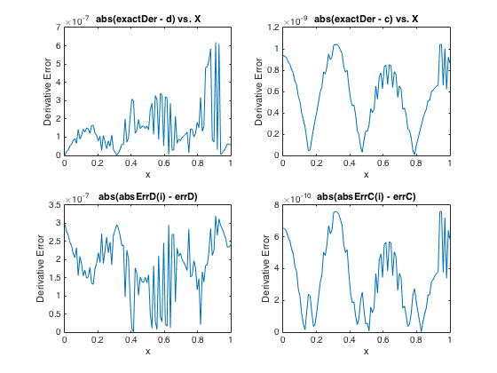
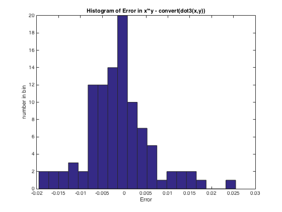

Contents
% ------------------------------------------------------------------------- % Student: Gurpreet Singh % HW # 1 % Read Section 1.3.2 Random Processes (p. 34 - 47) % - Do Problem P 1.3.2 (p. 40) % Read Section 1.5.2 Numerical Differentiation (p. 54 - 57) % - Do Problem P 1.5.1 (p. 57) % Read Section 1.6.1 Three-digit Arithmetic (p. 61 - 62) % - Do Problem P 1.6.1 (p. 63) % -------------------------------------------------------------------------
P1.3.2
% ------------------------------------------------------------------------- % Conside the quadratic equation ax^2 + bx + c = 0. Let P1 be the % probability that this equation has complex roots, given that the % coefficients are random variables with uniform distribution. Let P1(n) be % a monte carlo estimate of this probability based on n trials. Let P2 be the % probability that this equation has complex roots, given that the % coefficients are random variables with normal distribution. Let P2(n) be % a monte carlo estimate of this probability based on n trials. Write a % script that prints a nicely formatted table that reports the value of % P1(n) and P2(n) for n = 100:100:800. % Quadratic formula % x = -b +- sqrt(b^2 - 4ac) % --------------------- % 2a % If a quadratic equation with real-number coefficients has a negative % discriminant, then the two solutions to the equation are complex % conjugates of each other. % The discriminant is the b^2 - 4ac part of the quadratic formula. % if (b^2) < 4ac, it's complex disp(' ') disp('-------------------------------------------------------------------') disp(' Problem 1.3.2') disp('-------------------------------------------------------------------') disp(' ') disp(' '); disp(' Prob of Complex roots Prob of Complex roots'); disp(' n Uniform Coeff Normal Coeff '); disp('------------------------------------------------------'); for n=100:100:800 % Uniformaly distributed coefficients (UDC); UDC = rand(n, 3); P1 = sum(UDC(:, 2).^2 < 4*(UDC(:, 1)).*(UDC(:, 3)))/n; % Normally distributed coefficients (NDC); NDC = randn(n, 3); P2 = sum(NDC(:, 2).^2 < 4*(NDC(:, 1)).*(NDC(:, 3)))/n; disp(sprintf('%d %6.4f %6.4f', n, P1, P2)); end % ------------------------------------------------------------------------- % -------------------------------------------------------------------------
-------------------------------------------------------------------
Problem 1.3.2
-------------------------------------------------------------------
Prob of Complex roots Prob of Complex roots
n Uniform Coeff Normal Coeff
------------------------------------------------------
100 0.7800 0.3900
200 0.6900 0.4000
300 0.7567 0.3500
400 0.7650 0.3475
500 0.7400 0.3180
600 0.7067 0.3267
700 0.7429 0.3657
800 0.7588 0.3362
P1.5.1
% ------------------------------------------------------------------------- % Ch = f(a + h) - f(a - h) % ------------------- % 2 * h % errC(h) = (M3 * h^2) 2 * D % ---------- + ------ % 6 h % errC(h)' = (2 * M3 * h) 2 * D % ------------ - ------- = 0 % 6 h^2 % errC(h)' = 2 * D (2 * M3 * h) % --------- = ------------ % h^2 h % errC(h)' = 2 * D = (2 * M3 * h^3) % -------------- % 6 % errC(h)' = 6 * D = M3 * h^3 % errC(h)' = hopt = cubeRoot((6*D)/M3) % errC(cubeRoot((6*D)/M3)) = (M3 * (cubeRoot((6*D)/M3))^2) 2 * D % ------------------------------ + ------ % 6 (cubeRoot((6*D)/M3)) disp(' ') disp('-------------------------------------------------------------------') disp(' Problem 1.5.1') disp('-------------------------------------------------------------------') disp(' ') m = 100; x = linspace(0,1,m); for i=1:m exactDer = 10*cos(10*x(i)); [d, errD, c, errC] = Derivative('sin10', x(i), eps, 100, 100); absErrD(i) = abs(exactDer - d); absErrC(i) = abs(exactDer - c); errrD(i) = abs(absErrD(i) - errD); errrC(i) = abs(absErrC(i) - errC); end figure % This subplot shows the absolute error between % the derivative computed using Dh and the exact derivative subplot(2, 2, 1); plot(x, absErrD); title('abs(exactDer - d) vs. X') xlabel('x') ylabel('Derivative Error') % This subplot shows the absolute error between % the derivative computed using Ch and the exact derivative subplot(2, 2, 2); plot(x, absErrC); title('abs(exactDer - c) vs. X') xlabel('x') ylabel('Derivative Error') % This subplot shows the absolute error between the % error computed from exact derivative and errD, which is the error % computed in the derivative function. subplot(2, 2, 3); plot(x, errrD); title('abs(absErrD(i) - errD)') xlabel('x') ylabel('Derivative Error') % This subplot shows the absolute error between the % error computed from exact derivative and errC, which is the error % computed in the derivative function. subplot(2, 2, 4); plot(x, errrC); title('abs(absErrC(i) - errC)') xlabel('x') ylabel('Derivative Error') % ------------------------------------------------------------------------- % -------------------------------------------------------------------------
------------------------------------------------------------------- Problem 1.5.1 -------------------------------------------------------------------
P1.6.1
% ------------------------------------------------------------------------- % Write a function s = dot3(x,y) that returns the 3-digit representation of % the inner product x'*y where x and y are column vectors of the same % length. The inner product should be computed using 3-digit arithmetic. (Make % effective use of represent, convert, and float.) The error can be computed % via the command err = x?*y - convert(dot3(x,y)). Write a script that plots % a histogram of the error when dot3 is applied to 100 random x?*y problems % of length 5. Use randn(5,1) to generate the x and y vectors. Report the % results in a histogram with 20 bins % % disp('```````````````````````````````````````````````````````````````````') % % test % disp('Testing - Represent -237000 in floating point') % f = Represent(-237000) % % disp('Converting it back to -237000') % Convert(f) % % disp('```````````````````````````````````````````````````````````````````') % m = 100; error = zeros(m, 1); for k = 1:m x = randn(5, 1); y = randn(5, 1); error(k) = x'*y - Convert(dot3(x,y)); end figure hist(error, 20) title('Histogram of Error in x''*y - convert(dot3(x,y))') xlabel('Error') ylabel('number in bin')